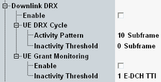

This section describes the parameters for discontinuous reception in the downlink, see also "Continuous Packet Connectivity (CPC)".
The parameters from this section are defined in 3GPP TS 25.331 as the DTX-DRX information.

Enables discontinuous reception in the downlink.
Enabling the DL DRX is possible only if the UL DTX is enabled.
During reduced signaling is activated, use also the "HS-SCCH Order" button to trigger the order type 0 manually.
Remote command:The following settings apply to the UE discontinuous reception cycle.
Number of subframes after downlink activity where the UE has to monitor HS-SCCH continuously.
Remote command:The following settings apply to the UE grant monitoring.
Configures whether the UE is required to monitor E-AGCH/E-RGCH when they overlap with the start of an HS-SCCH reception as defined in the UE DRX cycle.
Remote command: